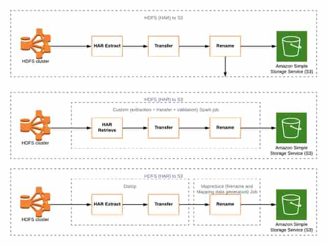

THE PROBLEM
Mission-critical cloud migration
The legacy platform combined document storage, distributed search and application dependencies. Moving its files alone would not produce a usable cloud platform: document names and mappings, search records, access paths and recovery procedures all had to make sense in the target environment. The architecture drawings expose that migration as a set of distinct transformations rather than a single copy operation.
What I owned
I led mission-critical cloud migration work and designed the transition of a mortgage-document platform from Cloudera Hadoop and Solr to AWS object storage and distributed search. I led Spark migration development and coordinated infrastructure, data movement, testing and production transition.
- Led three mission-critical migrations across distributed-data and live application systems during the engagement, coordinating architecture, automation, data movement, performance testing and production transition.
- Designed and productionized a document-platform migration from Cloudera Hadoop/Solr to AWS Elasticsearch/OpenSearch, ELK and S3.
- Led development of Spark migration jobs moving Solr data into Elasticsearch/ELK and HBase data into S3.
- Built reusable infrastructure and operations automation and partnered with test teams to performance-test infrastructure at scale using Dynatrace.
SYSTEM DESIGN
Follow the architecture.
- 01
Read the legacy representation
Documents reside in the Hadoop environment, including HAR archive representations in the supplied migration drawing. Search and HBase data have related but distinct migration paths.
- 02
Transform and transfer
The drawing compares extraction/transfer/rename stages, a custom Spark extraction-transfer-validation job, and a DistCp path followed by MapReduce naming/mapping work. These are migration approaches shown in the design, not a claim that every branch ran for every dataset.
- 03
Preserve names and validate
The naming/mapping stage is visible in the source design. Validation is part of the custom Spark approach. These stages connect successful transport to usable target objects.
- 04
Integrate the target platform
S3 and Elasticsearch/ELK become part of a larger cloud architecture with private proxy access, identity integration, infrastructure automation and cross-region recovery.
ENGINEERING JUDGMENT
The decisions behind the boxes.
Separate transport from transformation
DistCp can address bulk transfer, while archive extraction and target naming/mapping require additional work. The design makes those responsibilities explicit.
Keep document and search migrations coordinated
S3 objects and search records serve different roles. The migration program covered both, so the target architecture could support application behavior as well as storage.
Include operations in the migration scope
Provisioning, performance testing, snapshots and recovery were part of the engineering work. A cloud cutover needed an operating model as well as a target diagram.
DELIVERY & OPERATIONS
What changed.
- Delivered the document-platform cloud migration and led Spark-based data migration development.
- Led three mission-critical migration programs across the broader client engagement.
- Provided technical leadership for teams of approximately three to eight engineers, spanning architecture through production transition.
The operating story
I built Python, Airflow, Ansible and shell automation for snapshots, migration and instance bootstrap. In the same client engagement, I also built and productionized a hybrid-cloud DR environment with approximately 15-minute RPO and 2-hour RTO. Those recovery figures belong to that DR environment, not a claim that every migration achieved those targets.
ORIGINAL DIAGRAMS
A glimpse of the original diagrams.

LOW-RESOLUTION PORTFOLIO PREVIEWHDFS/HAR to S3 migration approaches
The original comparison of staged, Spark and DistCp/MapReduce migration approaches.
LET’S GO DEEPER
Good starting points for a conversation.
- How did archive extraction differ from bulk transfer?
- How did naming and mapping affect application compatibility?
- What made the platform operationally ready after migration?
Scope and attribution. The HAR diagram presents alternatives. It does not by itself establish the selected route for every workload, total bytes migrated, zero downtime or a benchmark. The leadership and delivery claims come from my career record; the drawing explains the technical approach.
Next case studyCloud automation, identity & recovery →